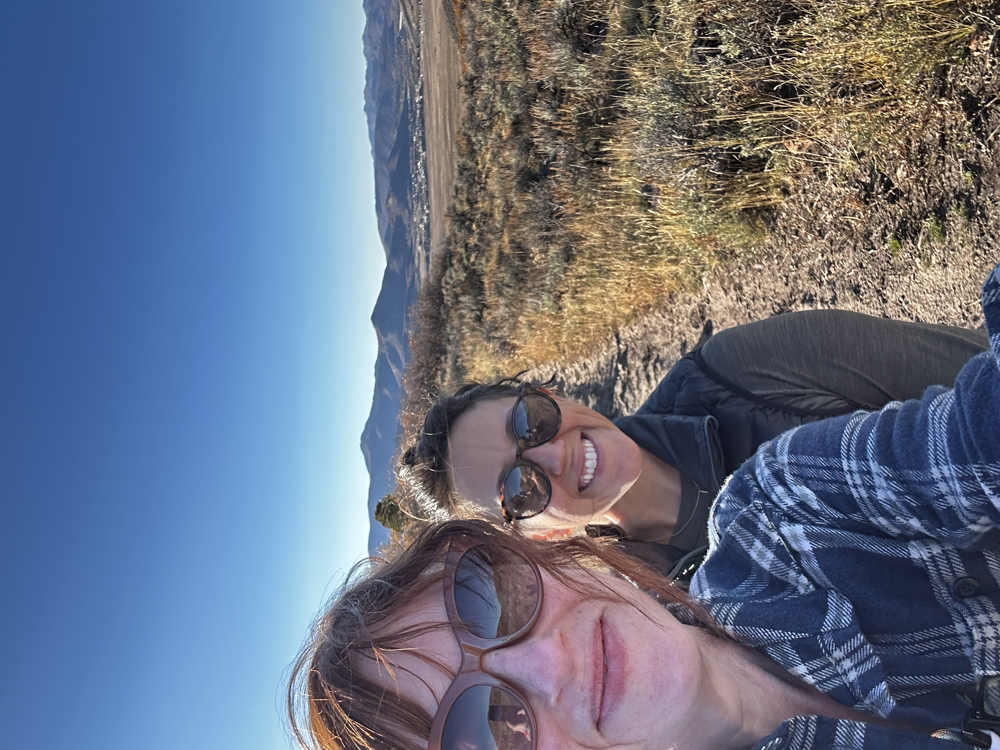
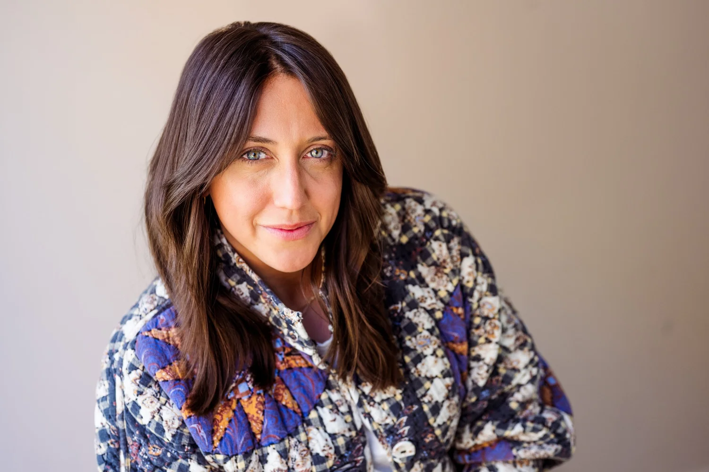

You started this because you love the work — the reporting, the writing, the chance to own your IP and your career. You wanted a business that gave you freedom, energy, and joy.
But if you've done what you set out to do, that also means your responsibilities have grown ten fold. Coaching gives you an experienced media leader in your corner — someone who's been where you are, who'll help you see clearly, and who'll push you to build something sustainable.

You're closing deals, making product decisions, leading strategy meetings, hiring, talking to investors, and figuring out how to keep the business growing in a world that seems hell bent on making that growth plateau.
You're probably so deep in your business that it's hard to see the small tweaks that can have a significant impact. The biggest benefit of coaching is accountability, support, and an outside eye.
Coaching isn't about doing more. It's about getting clarity on what actually matters, building systems that work without you in the room, and having someone who's seen the patterns before — so you don't have to figure it all out alone.

Blair is a media executive who has led business strategy, audience growth, and innovation at places like Vox and ProPublica — and has coached dozens of journalists on how to launch and grow independent media businesses.
She combines traditional coaching elements — asking questions, letting you come to the answers — with real-world expertise in newsroom management, creator journalism, human-centered design, data, audience growth, and revenue. We fuse coaching, advising, and teaching, depending on what you need.
We create space to ask questions and be gentle around how hard this is — and give you real talk when you need it. Project C co-founder Liz Kelly Nelson is also in the wings for support.
Whether you want deep, personalized 1-on-1 guidance or the energy and accountability of a cohort, there's a coaching path for you. Both start with a free conversation to make sure we're a good fit.
For creator journalists at any stage who want to level up. A mix of coaching, teaching, and thought partnership — tailored to your specific goals and challenges.
A transformative 4-month program for seasoned creator journalists making $100K+ in revenue. Combines 1-on-1 coaching with the support of a small mastermind of peers. Next cohort starts summer 2026.
Every engagement is different. Here's the kind of work we do together — whether you're in 1-on-1 coaching or Accelerate.
Cut through the noise and get clear on what matters most for your business right now — not six hypothetical futures, just the one that actually moves you forward.
Review your business model with fresh eyes. Identify the opportunities you're too close to see and build a realistic plan to pursue them.
Develop processes and workflows that keep things humming even when you step away. Delegate with confidence, not anxiety.
Whether you're managing a growing team or flying solo, step into the leadership your business needs — and find the capacity you didn't know you had.
From grant proposals to partnership decks to your editorial strategy — get honest, expert feedback that drives audience and business growth.
Identify the small shifts that unlock capacity and mental space. This isn't just about growing your business — it's about making the work sustainable and keeping you whole while you do it.
We're practitioners who've built things — alone and with teams. Our coaching is grounded in real experience, not theory. Here's what guides us.
Still have questions? Email us — we're happy to talk it through.
Whether you're ready for Accelerate or exploring 1-on-1 coaching, let's talk about where you are and where you want to go. No commitment, no pressure — just a conversation.